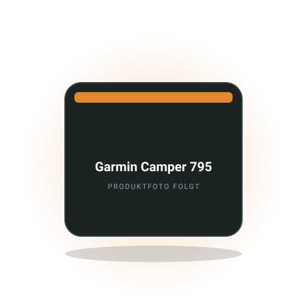

Video-Test
Rückfahrkamera mit Bild auf dem Handy: Bergmann+Koch Kamera im Wohnmobil-Test
Kennzeichenhalter tauschen, App öffnen, fertig: kein Bohren, kein Kabel, kein Monitor. Alle Fakten aus dem Video von CAMPER4EVER.
Bereich
Welches Navi Höhe und Gewicht deines Campers kennt, welche Handyhalterung auf Kopfsteinpflaster hält, ob eine Dashcam erlaubt ist und wie du eine Rückfahrkamera nachrüstest. Vergleiche, Praxis und eine klare Empfehlung.

Redaktions-Tipp
Das Navi, das Höhe, Breite und Gewicht deines Campers kennt und dich nicht unter die zu niedrige Brücke schickt.
Warum wir es empfehlen: Ein Smartphone kennt dein Fahrzeug nicht, ein Camper-Navi schon: Es meidet Strecken mit Höhen- und Gewichtsbeschränkungen und hat Campingplätze und Stellplätze direkt an Bord. Für Kastenwagen über 2,5 Meter Höhe und alle, die ohne Mobilfunkempfang navigieren, ist das der entscheidende Unterschied.
Preis-Rangeca. 350 bis 450 €Stand Oktober 2026
Bei Amazon ansehenAffiliate-Link *Kartenupdates sind beim Hersteller enthalten, Verkehrsinfos brauchen das gekoppelte Smartphone. Preis bleibt für dich gleich.
Kostenlos als PDF
Strom, Schlafen, Küche, Sanitär, Sicherheit, Werkzeug. Zum Abhaken vor jeder Fahrt, damit du nie wieder ohne Ladekabel, Wasserschlauch oder Keil losfährst.
Kennzeichenhalter tauschen, App öffnen, fertig: kein Bohren, kein Kabel, kein Monitor. Alle Fakten aus dem Video von CAMPER4EVER.
Ein Händler vergleicht einen Knaus Boxlife von 2016 mit einem neuen Sunlight Cliff. Was das Video zeigt und welche Gegenargumente er nennt.
Fahrzeugprofile, Offline-Karten, Stellplatz-Daten und Bedienung im Vergleich. Wann sich ein eigenes Gerät lohnt.
Lüftungsgitter, Saugnapf, Klebesockel oder Schraubhalter: Vor- und Nachteile, Belastbarkeit und was MagSafe taugt.
Rechtslage in Deutschland und beliebten Reiseländern, Dauerstrom per Hardwire-Kit und Parkmodus im Camper.
Wohin mit Brille, Papieren, Ladegeräten und Snacks? Lösungen für die Armaturenbretter von California und Marco Polo.
Die Fragen, die am häufigsten gesucht werden. Ausführlich beantwortet, mit Zahlen, Rechenwegen und den Fehlern, die du dir sparen kannst.
Für Kastenwagen und schwere Ausbauten lohnt sich ein Camper-Navi mit Fahrzeugprofil von Garmin oder TomTom, Preis ca. 300 bis 500 €. Für kompakte Campervans unter zwei Metern Höhe wie VW California oder Marco Polo reicht in der Regel das Smartphone mit einer Offline-fähigen App.
Der Unterschied liegt im Fahrzeugprofil: Du gibst Höhe, Breite, Länge und Gewicht ein, und das Navi meidet Brücken, Unterführungen und Straßen mit Beschränkungen. Smartphone-Apps wie Google Maps kennen diese Daten nicht. Apps mit Camper-Profil wie Sygic Truck oder CoPilot schließen die Lücke zum Teil, laufen aber auf einem kleinen Display, das in der Sonne schwer ablesbar ist und während der Fahrt heiß wird. Dedizierte Geräte haben außerdem Stellplatz- und Campingplatz-Datenbanken an Bord, funktionieren ohne Mobilfunk und blockieren dein Telefon nicht.
Typische Fehler: Das Fahrzeugprofil nach dem Kauf nicht einstellen, dann routet auch ein Camper-Navi wie ein PKW. Die Höhe inklusive Dachbox, Klimaanlage oder Solarpanel eintragen, nicht die Herstellerangabe. Und ein zweites Gerät als Backup behalten, denn an der italienischen Küste helfen Beschränkungsschilder oft erst, wenn es zu spät ist. Zum Vergleich Camper-Navi
Für Campervans in PKW-Größe meistens ja, für Fahrzeuge über zwei Meter Höhe oder 3,5 Tonnen nein. Google Maps kennt keine Fahrzeugmaße, keine Höhenbeschränkungen und keine Gewichtsgrenzen und schickt dich auf dieselben Straßen wie einen Kleinwagen.
Dazu kommt die Datenlage: Google Maps bevorzugt die schnellste Route und nimmt dafür gern enge Ortsdurchfahrten, Feldwege und Serpentinen, die mit einem 6-Meter-Kastenwagen unangenehm werden. Offline-Karten lassen sich zwar herunterladen, aber Verkehrsinfos und Suche fehlen dann. Alternativen mit Camper-Profil sind Sygic, CoPilot oder die Apps der Stellplatzführer, die Fahrzeugmaße berücksichtigen, allerdings mit Abo-Kosten von ca. 20 bis 60 € im Jahr. Für die Suche nach Stellplätzen und Entsorgungsstationen ist Google Maps ohnehin die falsche App, dort sind spezialisierte Camper-Apps deutlich besser.
Praktisch bewährt sich die Kombination: Google Maps für Zieleingabe, Öffnungszeiten und Verkehr, eine Camper-App oder ein Navi mit Profil für die eigentliche Route. Wer öfter abseits von Autobahnen fährt, prüft die Strecke vorher in der Satellitenansicht auf enge Stellen.
Im Camper hält eine Halterung mit Schraub- oder Klebesockel am sichersten, weil Vibrationen und Schlaglöcher stärker sind als im PKW. Lüftungsgitterhalter sind im Transporter-Cockpit oft zu wackelig, Saugnapfhalter an der Scheibe brauchen bei Hitze eine Nachkontrolle. Preis ca. 20 bis 60 €.
Die Cockpits von Ducato, Sprinter, Crafter und Transit Custom haben breite Armaturenbretter mit Ablagen, auf die sich ein Klebesockel oder eine Halterung mit Gewichtsfuß gut setzen lässt. Beim VW T6 und der V-Klasse gibt es für die Lüftungsdüsen und den Bildschirmrand spezielle Halter, die ohne Kleben auskommen. Magnethalter mit MagSafe-kompatiblem Ring sind praktisch, lassen das Handy bei kräftigen Stößen aber eher los als eine Klemmhalterung. Wer das Handy als Navi nutzt, braucht zusätzlich eine Ladeleitung, sonst ist der Akku nach zwei Stunden Navigation leer. Eine Qi-Ladehalterung erledigt beides, erwärmt das Gerät aber zusätzlich.
Oft übersehen: Die Halterung darf das Sichtfeld und keinen Airbag verdecken, Scheibenhalter unten links im Fahrersichtfeld sind in manchen Ländern untersagt. Im Sommer das Handy nicht an der Scheibe hängen lassen, bei 60 Grad schaltet es ab. Zum Ratgeber Handyhalterung
In Deutschland ja, solange die Kamera nur kurze Sequenzen anlassbezogen speichert und nicht dauerhaft aufzeichnet. Aufnahmen können seit einem Urteil des Bundesgerichtshofs als Beweismittel verwertet werden. In Österreich, Portugal und Luxemburg ist der Einsatz stark eingeschränkt oder verboten, in Frankreich und Italien erlaubt.
Datenschutzrechtlich ist das Problem die permanente Aufzeichnung fremder Personen und Kennzeichen. Zulässig sind Kameras mit Ringspeicher, die das Material laufend überschreiben und nur bei einem Aufprallsensor oder manuellem Auslöser dauerhaft sichern. Viele Dashcams bieten einen Parkmodus, der bei Erschütterung aufzeichnet, dafür brauchen sie Dauerstrom über ein Hardwire-Kit an der Starterbatterie oder einen eigenen Pufferakku. Im Camper ist der Anschluss an die Bordbatterie die bessere Wahl, weil die Starterbatterie bei mehrtägiger Standzeit sonst leer wird. Vor Fahrten ins Ausland die Regeln des Ziellandes prüfen, im Zweifel die Kamera abnehmen.
Praktische Fehler: Kamera direkt im Wischerfeld oder vor einem Sensor der Fahrassistenz montiert, Speicherkarte ohne Dauerbetriebs-Eignung, die nach einem Sommer defekt ist. Und keine Aufnahmen veröffentlichen, auch nicht anonymisiert. Zum Ratgeber Dashcam im Wohnmobil
Rechne mit ca. 150 bis 400 € für Kamera und Monitor im Selbsteinbau und ca. 400 bis 900 € mit Werkstattmontage. Nachrüstsets mit Kabel sind zuverlässiger als Funklösungen, die Integration ins Werksradio ist am aufwendigsten und teuersten.
Die Varianten: Eine Kamera am Heck mit eigenem Monitor am Armaturenbrett oder als Rückspiegel-Monitor ist die einfachste Lösung und funktioniert in jedem Fahrzeug. Funkkameras sparen das Kabel durch den Innenraum, haben aber bei langen Kastenwagen und metallischen Ausbauten gelegentlich Bildaussetzer. Die Einbindung in ein Werksdisplay braucht ein fahrzeugspezifisches Interface, das allein ca. 100 bis 300 € kostet. Wichtig ist eine Kamera mit großem Blickwinkel und Infrarot für die Nacht, die so hoch wie möglich sitzt, am besten über der Hecktür in der dritten Bremsleuchte oder einem Dachträger. Dauerbild-Kameras lassen sich auch während der Fahrt als Rückspiegel nutzen, wenn der Innenraum voll ist.
Oft vergessen: Die Kabeldurchführung durch die Hecktür braucht eine flexible Tülle, sonst bricht die Leitung nach einigen hundert Türöffnungen. Bei Fahrzeugen mit Heckflügeltüren die Kamera an der feststehenden Dachkante montieren, nicht an einer Tür. Zum Ratgeber Rückfahrkamera nachrüsten
Handys lädst du über einen USB-C-Adapter mit Power Delivery in der 12-V-Steckdose, Laptops brauchen einen Adapter mit 65 bis 100 W oder einen kleinen Wechselrichter. Eine 12-V-Steckdose ist meist mit 10 bis 15 A abgesichert und liefert damit 120 bis 180 W, mehr sollte man nicht dauerhaft abrufen.
USB-C-Ladeadapter für den Zigarettenanzünder mit 45 bis 100 W kosten ca. 15 bis 40 € und laden Laptops von Apple, Lenovo oder Dell direkt. Ältere Laptops mit eigenem Netzteil brauchen einen Reinsinus-Wechselrichter mit 150 bis 300 W, der aber die Steckdose schnell an die Grenze bringt. Serien-Camper wie California, Nugget und Marco Polo haben hinten oft weitere 12-V- und USB-Dosen an der Bordbatterie, die auch im Stand nutzbar sind. Die Steckdosen im Fahrerhaus hängen meist an der Starterbatterie und sind bei Zündung aus stromlos. Wer eine Powerstation an Bord hat, lädt sie während der Fahrt über die 12-V-Dose und versorgt daraus Laptop und Kamera.
Typischer Fehler: Billige Mehrfachadapter, die bei 100 W warm werden und die Sicherung auslösen. Und Kabel über den Beifahrerfußraum, in denen sich jemand verheddert. Eine fest verlegte USB-Dose an der B-Säule löst beides. Zur Praxis: Laden während der Fahrt
Mit Klebesockeln auf doppelseitigem Acrylschaumband, Halterungen mit Gewichtsfuß und Antirutschbelag oder Klemmhaltern für Lüftungsdüsen und Bildschirmrand. Bohren ist im Camper fast nie nötig und mindert den Wiederverkaufswert.
Klebesockel mit hochwertigem Montageband halten Navi, Handy oder kleine Ablagen dauerhaft, wenn die Fläche vorher mit Alkohol entfettet wird und das Band 24 Stunden ohne Last aushärten darf. Strukturierte Armaturenbretter wie im Ducato oder Transit brauchen dafür ein etwas dickeres, schaumgefülltes Band. Gewichtsfüße mit Silikonmatte eignen sich für ebene Ablagen, verrutschen bei Vollbremsungen aber. Für Tablets als Navi gibt es Halter, die sich am Bildschirmrahmen des Werksradios einhängen, ohne Spuren zu hinterlassen. Die Ablagefächer oben im Armaturenbrett lassen sich mit zugeschnittenen Antirutschmatten in sichere Ablagen für Brille und Schlüssel verwandeln.
Fehler, die man einmal macht: Sockel auf eine Airbag-Abdeckung kleben, dann wird die Halterung beim Auslösen zum Geschoss. Oder im Winter kleben, wenn das Montageband unter 15 Grad nicht abbindet. Und Saugnäpfe direkt in der Sonne lassen, die lösen sich bei Hitze und reißen beim Herabfallen das Navi mit.
Noch nicht geholt?
120 Punkte nach Bereichen sortiert. Dazu neue Video-Tests und Ratgeber, sobald sie online sind.
Powerstations, Bordbatterien, Ladebooster, Verbrauch.
›Faltpanels, Dachmodule, Laderegler, Ertrag, Montage.
›Matratzen, Topper, Froli, Aufstelldach, Kälte von unten.
›Campingtoilette, Trenntoilette, Dusche, Entsorgung, Hygiene.
›Kühlbox, Kocher, Induktion, Geschirr, Stromverbrauch.
›Frischwasser, Tankhygiene, Filter, Pumpen, Winterfest.
›